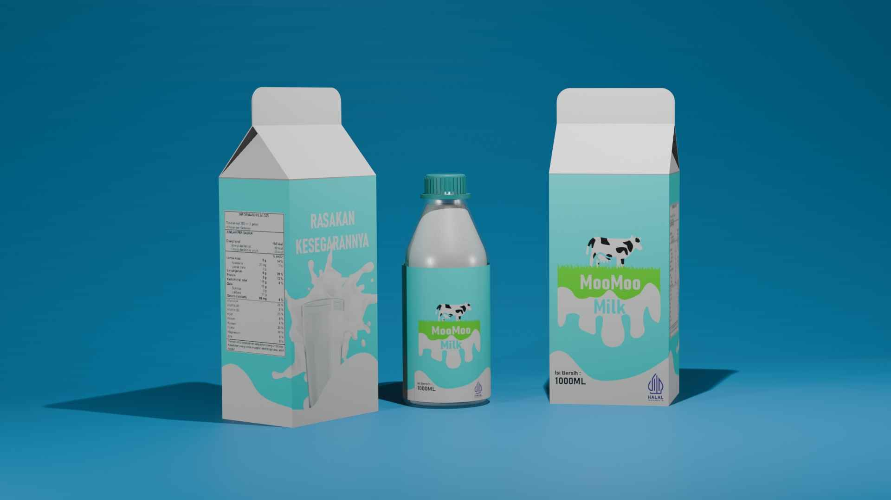

Video Iklan Objek 3D
Pertama kali saya membuat iklan 3D, karya ini dibuat untuk memenuhi tuntutan tugas dari mata kuliah Animasi 3D. Karya ini dibuat simple karena hanya diberi waktu 2 minggu.

Pertama kali saya membuat iklan 3D, karya ini dibuat untuk memenuhi tuntutan tugas dari mata kuliah Animasi 3D. Karya ini dibuat simple karena hanya diberi waktu 2 minggu.
Proyek ini merupakan tugas mata kuliah animasi menggunakan Blender, dengan fokus pada pembuatan objek 3D dan proses rendering perspektif.
Proyek ini merupakan tugas mata kuliah animasi menggunakan Blender, dengan fokus pada pembuatan objek 3D dan proses rendering perspektif.
Poster ini dibuat sebagai bagian dari pengerjaan tugas desain berdasarkan permintaan pihak lain. Fokus desain diarahkan pada visual kopi sebagai elemen utama untuk menciptakan kesan hangat dan santai, sesuai konsep kedai kopi sore hari.

Poster ini dibuat untuk mengikuti lomba poster Ramadhan pekan ke-2 dengan mengangkat tema refleksi diri dan ajakan untuk bertaubat. Desain menekankan kekuatan pesan melalui tipografi, pemilihan warna gelap yang tenang, serta elemen visual yang mendukung suasana religius. Karya ini berhasil meraih Juara 3, sehingga menjadi salah satu proyek desain yang menggabungkan pesan keagamaan dan pendekatan visual secara sederhana namun komunikatif.
Poster ini dibuat sebagai thumbnail dari sebuah short movie untuk tugas mata kuliah Audio Visual, saya dipercayakan untuk membuat sebuah poster untuk short movie yang sudah dibuat oleh tim saya.
Poster ini dibuat sebagai visual peringatan Hari kemerdekaan Republik Indonesia dengan menampilkan elemen warna merah putih dan siluet masyarakat sebagai simbol persatuan. Desain difokuskan pada kesederhanaan bentuk dan komposisi agar pesan kemerdekaan mudah dipahami, sekaligus menciptakan kesan nasionalis dan kebersamaan melalui pendekatan desain grafis yang bersih dan komunikatif.
Poster ini dibuat untuk mengikuti lomba desain poster yang diselenggarakan oleh Indonesia.go.id dengan tema Wajah Indonesia Digital. Desain menekankan pesan agar pengguna media digital tetap bersikap kreatif, beretika, dan positif saat berinteraksi secara online.

Infografis ini dibuat sebagai tugas mata kuliah Project MDG yang membahas peran teknologi dalam kehidupan masyarakat. Konten disajikan dalam bentuk visual informatif untuk menjelaskan dampak teknologi di bidang akses informasi, komunikasi, ekonomi, dan hiburan, serta cara memanfaatkan teknologi secara positif. Desain difokuskan pada penyampaian informasi yang ringkas, mudah dipahami, dan menarik secara visual agar materi edukasi dapat diterima dengan baik oleh pembaca.
Projek 2D Character Asset yang menampilkan beberapa variasi gaya rambut, dan atribut visual. Aset dibuat menggunakan pendekatan flat design dengan bentuk sederhana dan warna solid untuk menjaga konsistensi visual antar karakter.
Karya ini dibuat dengan fokus pada proses konversi bentuk realistis ke visual vektor yang terkontrol, dimulai dari referensi foto dan sketsa dasar hingga tahap finalisasi. Tantangan utama pada karya ini adalah menjaga karakter desain mobil tetap terbaca sambil menyederhanakan detail kompleks seperti lekukan bodi, lampu, dan roda. Pendekatan warna dan bidang digunakan untuk memberi kesan volume tanpa bergantung pada detail berlebihan, sehingga ilustrasi tetap ringan, rapi, dan mudah diaplikasikan pada berbagai media digital.

Ilustrasi ini dibuat berdasarkan referensi foto mobil sebagai bagian dari pengerjaan tugas ilustrasi. Prosesnya berfokus pada menyederhanakan bentuk mobil ke dalam gaya vektor dengan tetap menjaga proporsi, detail utama, dan karakter desain aslinya.
Ilustrasi ini berangkat dari foto referensi dan dikembangkan menjadi potret vektor dengan fokus pada karakter wajah dan gestur tubuh. Pendekatan visual menekankan penyederhanaan bentuk, pengelompokan warna, serta permainan bayangan untuk membangun kesan volume tanpa kehilangan identitas subjek.
Ilustrasi vektor ini dibuat sebagai proyek personal sekaligus hadiah untuk orang yang terdapat pada foto referensi.
Desain ini dibuat sebagai konsep ilustrasi yang diaplikasikan ke media kaos. Ilustrasi ditempatkan di bagian belakang sebagai fokus utama desain, sementara bagian depan dibuat lebih sederhana agar tidak terlalu ramai. Mockup digunakan untuk melihat bagaimana ilustrasi terlihat saat diterapkan langsung pada kaos, sekaligus memastikan ukuran dan posisi desain sudah sesuai.
Membuat karya ini dengan tujuan untuk meningkatkan skill saya dalam membuat ilustrasi, semua buah dibuat secara hampir sempurna. Karya visual ini dibuat untuk memenuhi tugas mata kuliah MDG.
Proyek ini merupakan pembuatan logo untuk pengajian dan paguyuban keluarga “Kong Awal”. Logo dirancang dengan simbol jabat tangan sebagai representasi kebersamaan, persatuan, dan kekeluargaan. Desain dibuat dalam bentuk vektor agar fleksibel digunakan di berbagai media.
Desain cover binder ini dikembangkan dengan pendekatan eksperimen visual berbasis tema karakter, di mana ilustrasi digunakan sebagai elemen dominan untuk membangun daya tarik visual sejak pandangan pertama. Karya ini menitikberatkan pada penyusunan elemen secara berlapis (layering), permainan bingkai, serta pemanfaatan warna dominan untuk menciptakan kesan identitas yang kuat dan konsisten.
Desain ini dibuat untuk memenuhi tuntutan tugas dari mata kuliah kewirausahaan.
Proyek ini merupakan desain banner promosi untuk usaha warung sayur dan buah. Fokus utama desain terletak pada kejelasan informasi, hierarki visual, dan visibilitas dari jarak jauh, sehingga nama usaha, jenis produk, serta kontak pemesanan dapat terbaca dengan cepat. Pemilihan warna kontras dan penggunaan foto produk segar dimanfaatkan untuk menarik perhatian sekaligus memperkuat persepsi kualitas dagangan.
Desain banner ini dibuat sebagai media promosi untuk usaha jasa service dan jual beli laptop, dengan fokus pada penyampaian informasi layanan secara jelas dan mudah dibaca. Penggunaan warna kontras dan elemen visual bertema teknologi berfungsi menarik perhatian serta memperkuat kesan profesional dan terpercaya.